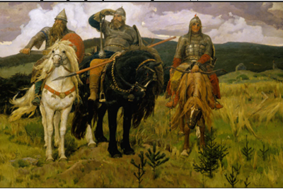

Рассмотрите репродукцию картины. Дополните текст словами.Одна из самых знаменитых картин, изображающих
богатырей, написана Виктором (1) . Эта картина так и называется —
«Богатыри», хотя чаще её называют (2) , — так едины они втроём, такие
непохожие, но неотделимые друг от друга, — суровый и спокойный (3) ,
готовый броситься в бой (4) и (5) , готовый не только воевать,
но и спеть.
Художник работал над картиной (6) —
от момента замысла, когда был сделан первый набросок, до завершения картины.
богатырей, написана Виктором (1) . Эта картина так и называется —
«Богатыри», хотя чаще её называют (2) , — так едины они втроём, такие
непохожие, но неотделимые друг от друга, — суровый и спокойный (3) ,
готовый броситься в бой (4) и (5) , готовый не только воевать,
но и спеть.
Художник работал над картиной (6) —
от момента замысла, когда был сделан первый набросок, до завершения картины.
 |
Выберите правильный ответ:
(1)
(2)
(3)
(4)
(5)
(6)
потому что в пропуски ставится: (1) Васнецовым; (2) Три богатыря; (3) Добрыня Никитич (слева, конь белый); (4) Илья Муромец (в центре); (5) Алёша Попович (справа); (6) двадцать лет (Илья «сидел сиднем»).